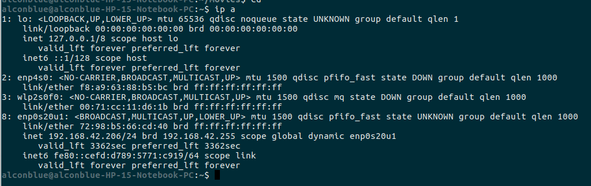

What is MAC and MAC spoofing?
MAC (Media Access Control) address is the physical address by which the nodes in the network are uniquely identified. MAC address that is hard-coded on a Network Interface Card (NIC) cannot be changed. MAC spoofing is the technique by which the Operating System is made to believe that the NIC has the MAC of the user's choosing.
Why would MAC spoofing be required?
Some of the ISP's charge by the data utilization as well as the number of devices connected. So they register the client's MAC addresses for service and billing. Also crackers use MAC spoofing to gain access to unauthorized services. Even though MAC spoofing is shown here, MAC spoofing is illegal if it violates agreement with ISP.
How to Spoof MAC id?
The steps given here are specific to finding out and spoofing MAC of the network that you are currently connected to in Ubuntu Operating System.
How to find the MAC of a node already connected to the network?
Install nmap on your system using command:
Run the following command to find your IP network address and subnet:
The output should be something like:

Here the network address is 192.168.42.0
Now run the following command to find the MAC and IP addresses of all the nodes connected to the router:
Replace the network id and subnet with your own. You will get a list of all MAC addresses, copy any one of them. Now in the top panel, click on the symbol of wifi/ethernet (network settings). From the drop down select edit connections. You will get a window as follows:

Click on add select type of connection from options. Select the device (the one whose network you had used). Paste the copied MAC in the cloned MAC address field. Save. Connect to the connection that you just added. And you can see in the Connection Information that your MAC has been changed!